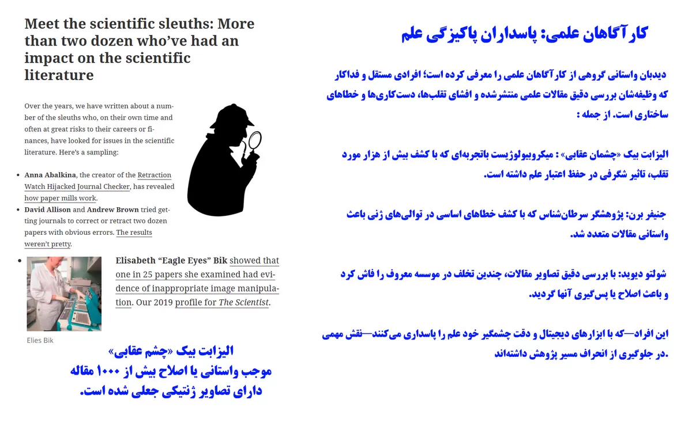
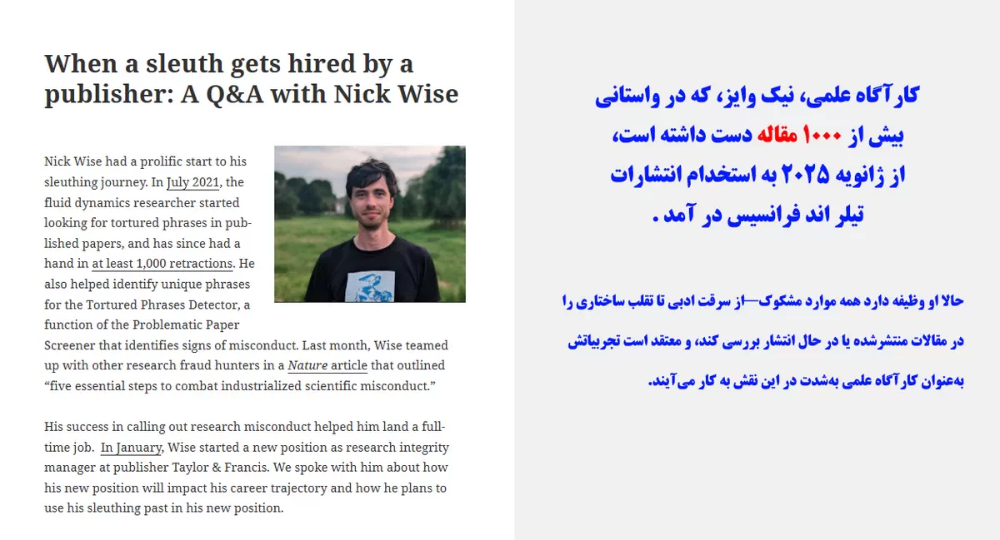
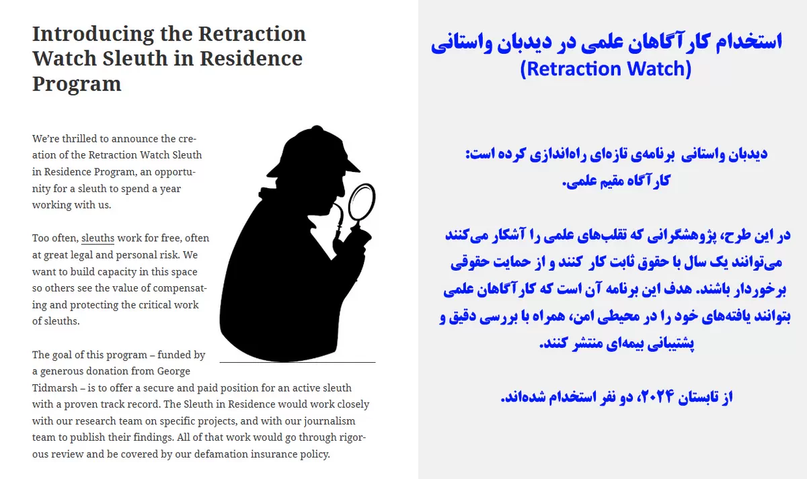
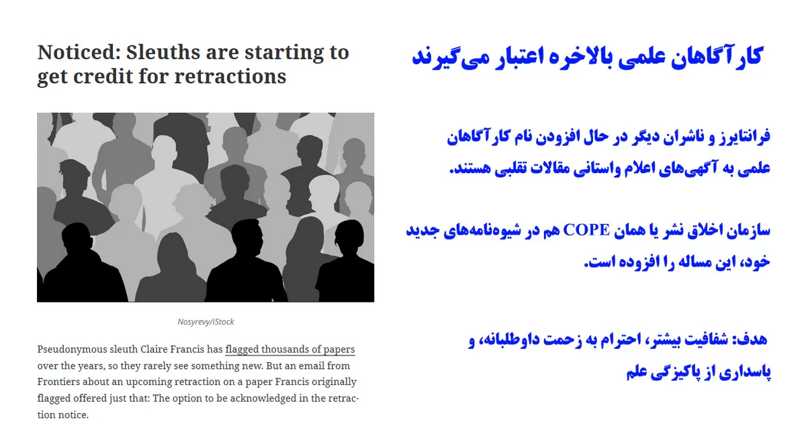
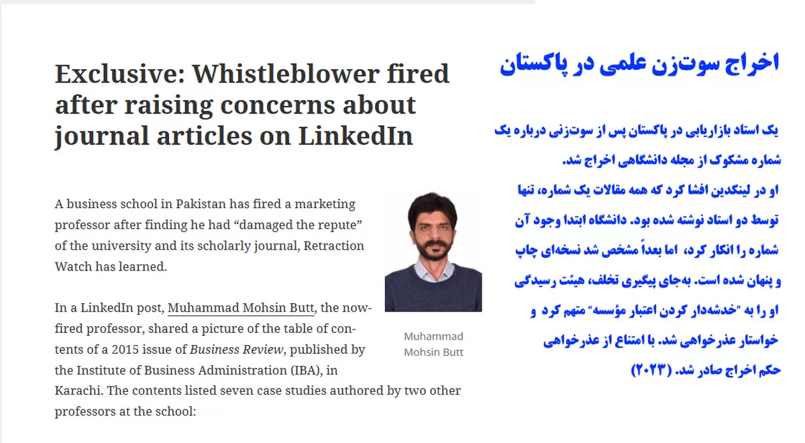
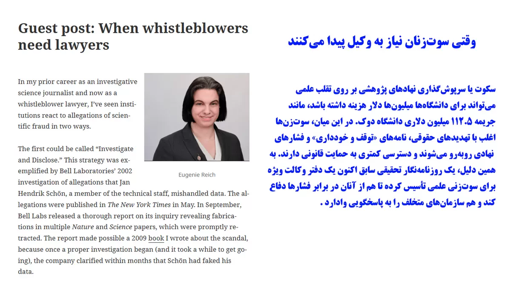
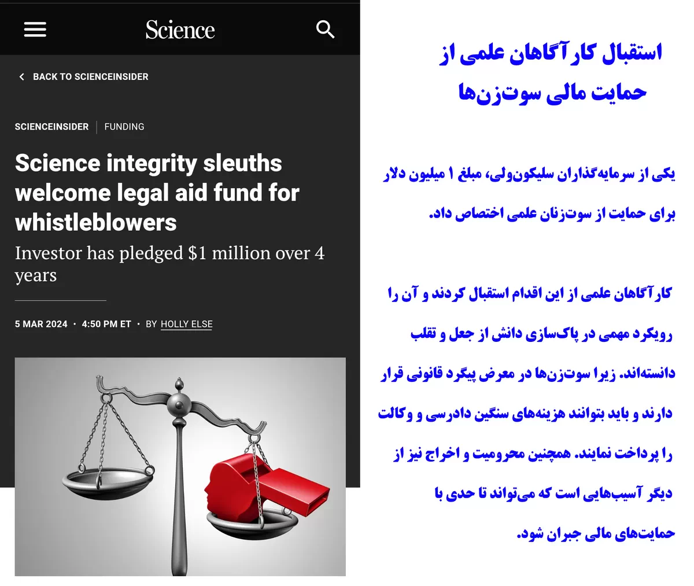
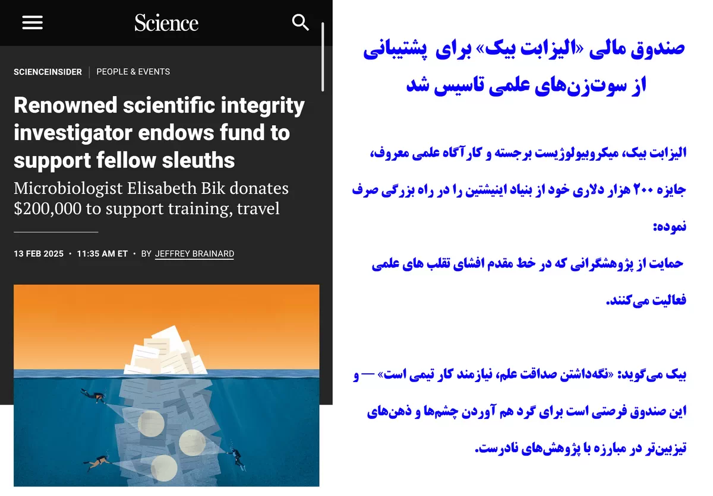
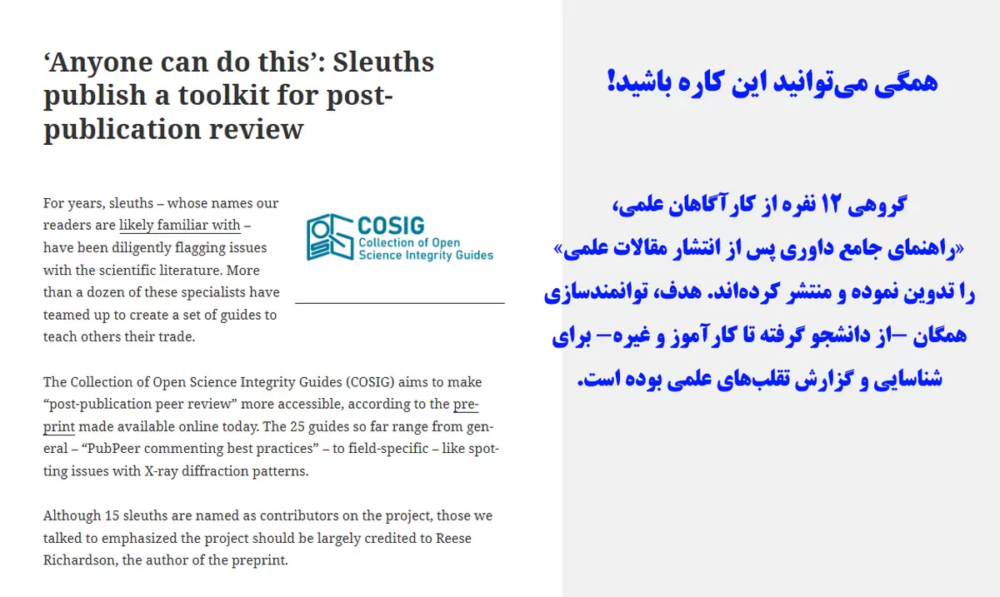

One lesson appears repeatedly throughout the history of scientific correction.
Major discoveries of misconduct rarely begin with institutions.
They usually begin with individuals.
Students.
Researchers.
Editors.
Reviewers.
Readers.
Independent investigators.
People who notice something unusual and decide not to ignore it.
Around the world, many of the most significant corrections and retractions originated with individuals who possessed little formal authority but were willing to examine evidence carefully and ask difficult questions.
Their work is rarely easy.
Some encounter resistance.
Some face legal threats.
Some experience professional isolation.
Others simply spend years pursuing questions that few people wish to discuss.
The lesson is not that whistleblowers are heroes.
Nor is it that whistleblowers are always correct.
The lesson is that scientific self-correction requires participation.
A scientific system cannot correct itself if nobody is willing to speak when something appears to be wrong.
Institutions matter.
Rules matter.
Policies matter.
Media matter as well.
But ultimately, correction begins when someone decides that evidence deserves attention.
That principle applies everywhere.
Not only in Iran.
Not only in universities.
But throughout science itself.
The images below present a small sample of media coverage highlighting the activities of whistleblowers and scientific detectives who have contributed to the correction of the scientific record worldwide. Sources: Retraction Watch and Science.








